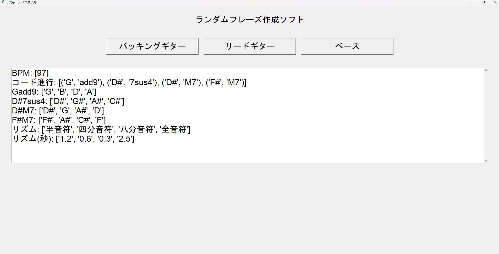
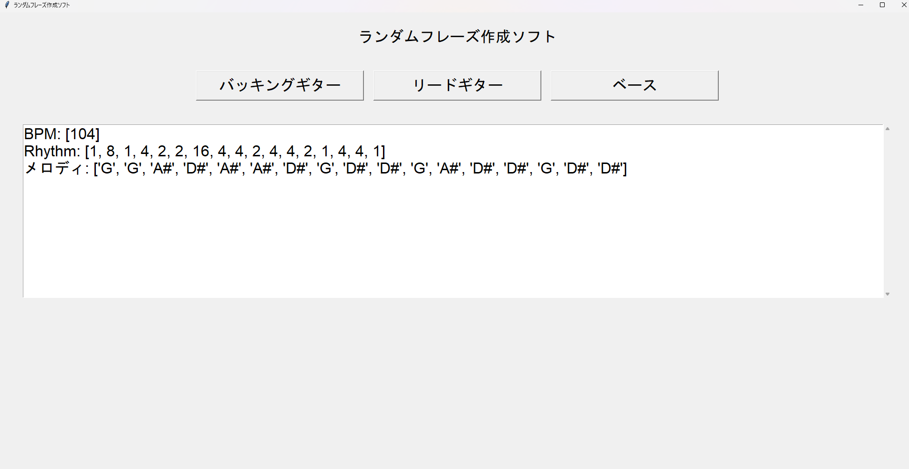
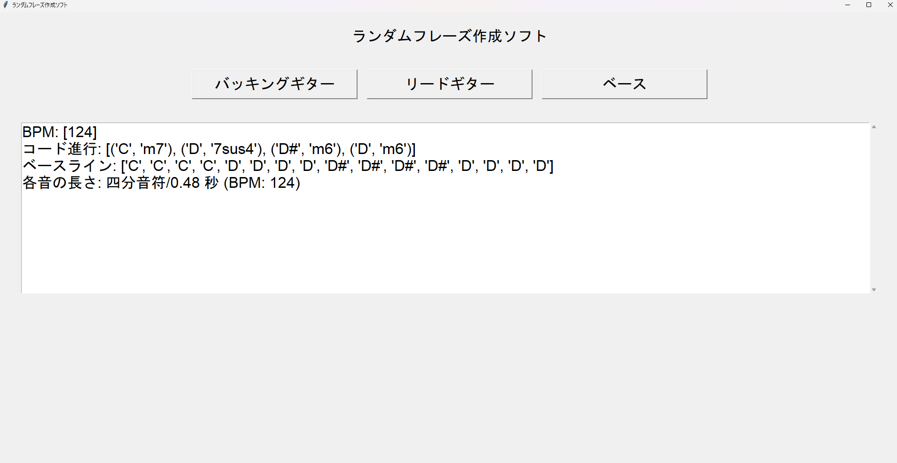

自己紹介
名前
所属

本ポートフォリオの作成に使用しました。

学校での授業で学び，discordのbotを作成したりしました。

Arduinoを使用した実習などで使用しています。
Word、Excel、PowerPointを授業やイベントで使用しています。
文化祭の展示にて，班でスマートロックを作成しました．私はdiscordのbotを用いてスマートロック本体に信号を伝えるプログラムを作成しました．

pythonを使用して，バッキングギター，リードギター，ベースそれぞれのフレーズをランダムで4小節生成するプログラムを作成しました．
githubリポジトリ
githubリポジトリ バッキングギターのボタンを押すと，bpm,コード進行，コードの構成音，リズムが出力されます．リズムが["四分音符","八分音符","四分音符","八分音符"]の場合，一つ目に出力されたコードを四分音符のリズムで 一小節弾き続け，二つ目に出力されたコードを八分音符のリズムで弾き続けます．
リードギターのボタンを押すと，bpm,リズム,音程が出力されます．リズムが1の場合は全音符，2の場合は半音符，４の場合は四分音符，8の場合は八分音符,16の場合は16分音符となっています． リズムとメロディは右から順に対応しており，一番右のリズムが4でメロディがD#であれば四分音符の長さでD#弾くということです．
ベースのボタンを押すと，コード進行とベースライン，リズムが出力されます．基本は四分音符で出力されたベースラインを弾きますが，コード進行を出力することでアレンジを加えることも可能にしています
メールでお問い合わせください: rq23056h@st.omu.ac.jp